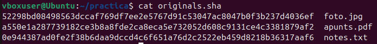
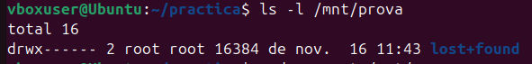
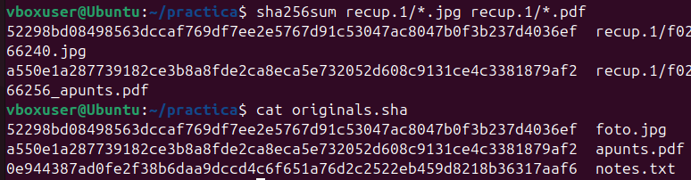
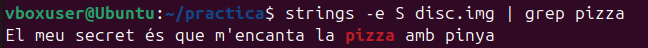
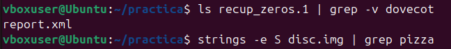

1. Preparació i hashes originals
Primer hem creat un disc virtual i hi hem guardat tres fitxers: una foto, un PDF i un TXT. Hem calculat els hashes originals amb sha256sum per poder comparar-los després.

| # | Apartat |
|---|---|
| 1 | Preparació i hashes originals |
| 2 | Formateig d'alt nivell |
| 3 | Recuperació amb PhotoRec |
| 4 | Recuperació del text |
| 5 | Esborrat amb zeros |
| 6 | Preguntes finals |
En aquesta pràctica hem creat un disc virtual de 200 MB per comprovar què passa amb els fitxers després de formatar-lo. Hem guardat una foto JPG, un PDF i un fitxer de text.
Després hem utilitzat PhotoRec per recuperar els fitxers i hem comprovat que eren els mateixos amb els hashes SHA-256. Finalment hem esborrat tot el disc amb zeros.
Primer hem creat un disc virtual i hi hem guardat tres fitxers: una foto, un PDF i un TXT. Hem calculat els hashes originals amb sha256sum per poder comparar-los després.

Hem tornat a formatar el disc virtual amb ext4. Després del formateig, en consultar el contingut només apareixia la carpeta lost+found. Els fitxers ja no eren visibles.

Hem utilitzat PhotoRec per recuperar la foto JPG i el document PDF. Després hem comparat els hashes dels fitxers recuperats amb els originals.
Els hashes coincideixen, per tant hem comprovat que els fitxers recuperats tenen el mateix contingut.

PhotoRec no ha recuperat el fitxer notes.txt, perquè els fitxers de text no tenen una capçalera pròpia que permeti identificar-los.
Tot i això, hem pogut trobar el text utilitzant strings i grep per buscar la paraula pizza.

Finalment hem sobrescrit tot el disc virtual amb zeros. Hem tornat a executar PhotoRec i hem buscat el text.
Aquesta vegada no s'ha recuperat cap dels nostres fitxers i la frase de la pizza tampoc no apareixia.

Després del nivell 3, el disc semblava buit. On eren realment els fitxers?
Els fitxers encara estaven al disc, però el formateig havia esborrat la informació que indicava on estaven guardats.
Per què els fitxers recuperats tenen noms diferents?
Perquè el formateig havia eliminat els noms originals i PhotoRec els posa noms nous quan els recupera.
Com podeu demostrar que la foto recuperada és exactament la mateixa?
Comparant els hashes SHA-256. Si són iguals, significa que els fitxers tenen el mateix contingut.
Per què PhotoRec ha trobat la foto i el PDF, però no notes.txt?
Perquè els JPG i PDF tenen una capçalera que PhotoRec pot identificar, però els TXT no. Hem trobat el text amb strings i grep.
Quin formateig heu fet al nivell 3 i quin al nivell 5?
Al nivell 3 hem fet un formateig d'alt nivell. Al nivell 5 hem fet un esborrat complet amb zeros, que la pràctica anomena formateig de baix nivell.
Quin formateig faríeu abans de vendre un USB amb fotos personals?
Faria un esborrat segur adequat al dispositiu, perquè amb un formateig ràpid algú podria recuperar les meves fotos personals.